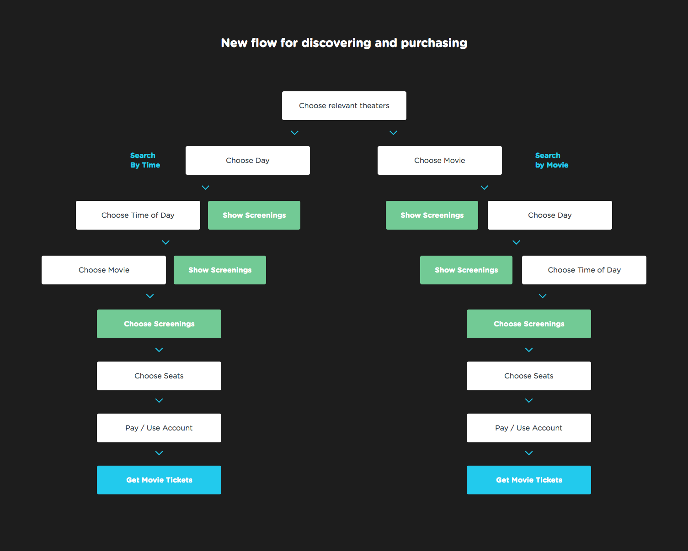
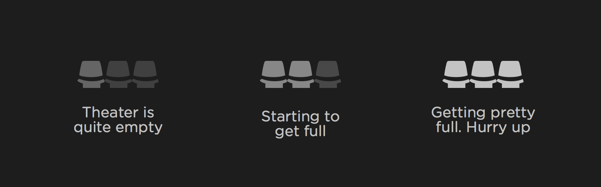
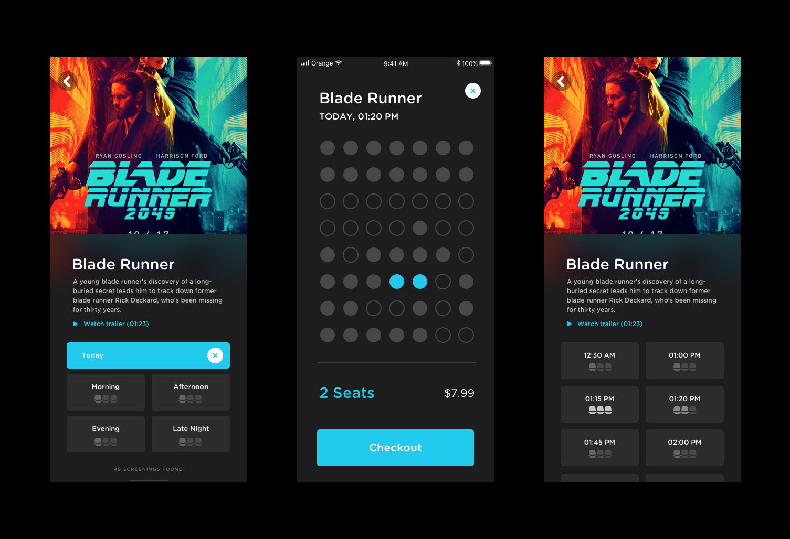
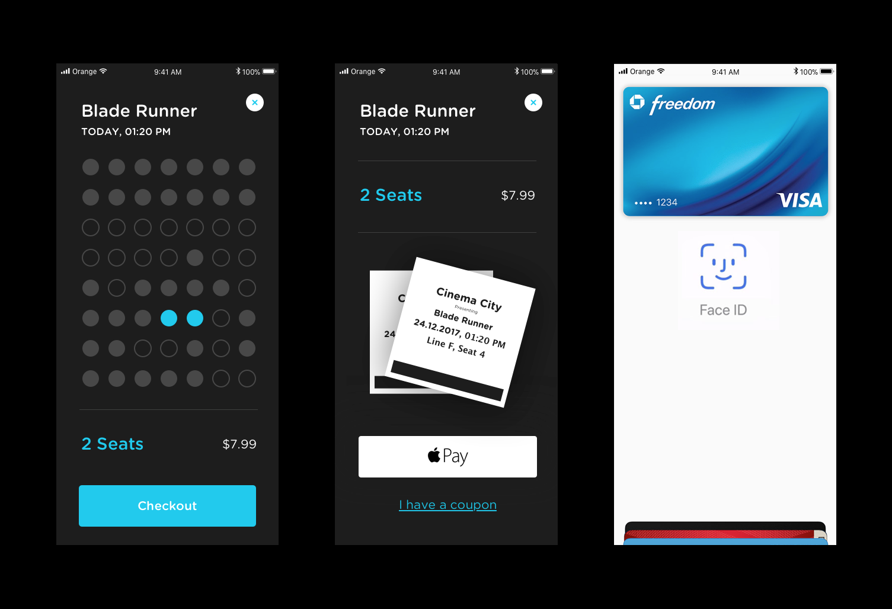
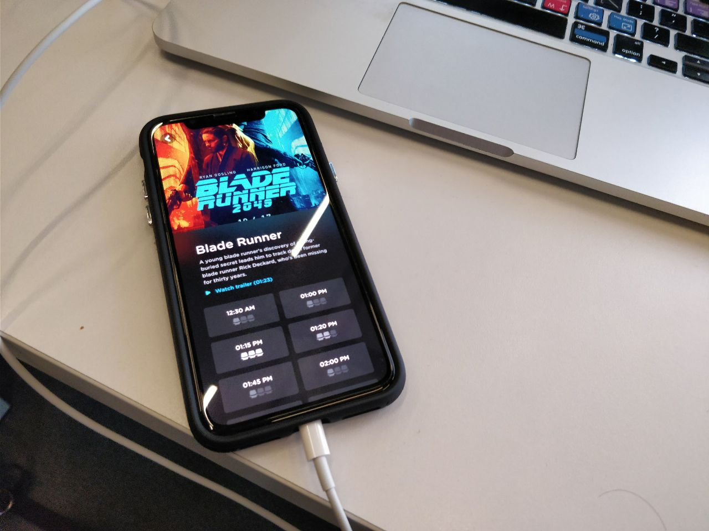

Improving the Cinema Experience
- Role: UX Design
- Time Frame: 4 Weeks
- Team: Alone
Going to the cinema is a fun experience, but ordering the tickets in many apps and website often feels like navigation in a really long and frustrating process.
Today’s Solution
After going through different cinema websites, I saw major UX problems in many of them. I chose to focus on the experience in one of the biggest cinema companies in my country, Cinema City — www.cinemacity.co.il, as a basis for the problem I wanted to fix. I downloaded and installed their iOS app to see how it works today.

User Stories
In order to build realistic user stories, I surveyed 10 people, aged between 22 to 32, who go to the cinema at least once every two months. The questions focused about the last time they went to the cinema. Main takeaways:
Six said they wanted to watch a specific movie, so they were looking for the right time to see it.
Two said they wanted to go to the cinema at a specific time of the week, so they were looking for the best movie available at that time.
One said she wanted to go to the cinema during some evening this week.
All of them wanted to go to a movie around their living / working area.
Pain Points
After making a few assumptions myself, I joined it with some more questions I asked in the survey to support / contradict my assumptions with data, and help me find the major and minor pain points.
The current app does not support any of the user stories really well. It forces the user to give all the exact details (specific movie, specific theater, specific date, specific hour) before seeing if the screening is available / not available.
6/10 complained that the process feels long.
4/10 complained about not having seats after going through the entire process during busy evenings.
2/10 Complained about having to pay extra fees they didn’t expect.
Other complaints mentioned the app’s low speed or bugs.
Suggested Solution
The solution takes two of the main user stories into account. I split the options to either Search by Movie or Search by Time. I tried to offer relevant screenings at each stage of the process, with extra choices functioning as a smart filter option.
Suggested Solution
1. Differentiation between the different user stories
The two main user stories are people who are looking for a good time to watch the new Justice League movie (not too bad, by the way), and people who are looking for a nice movie to watch during Wednesday afternoon. These are just specific examples, but they help understand what does the user expect to see.
This information made it easy to make the choice of splitting the browsing functioning, to ‘Search by Title’ and ‘Search by Time’. Doing this, made the UI for both simpler and easier to navigate.
2. Simplification of fields
When searching for a good movie to watch at a specific time, having a date picker is not really needed, since the tickets are only sold for the following week (true to the example website I chose), and updated every day. Choosing the exact time is not really needed at this stage. The user’s task is to choose a movie and a day / time of day. I chose to spread all the choices using big buttons that will be easily understandable to everybody, and hard to miss. Every choice filters the available movies, and highlights the relevant screen times.
3. Helping the user make better choices
According to the survey, some of the frustrations come from the fact that they finally choose the right screening time + movie for them, only to realize there are no relevant available seats. I solved it by helping them make the right choice. Next to each screening (that will open a ‘choose seats’ dialog followed by payment and producing the ticket), I will show an icon hinting how many seats are available.
And here is how it looks integrated in the UI
4. Payment
I chose to show the payment once the user selects the seats. The price should be transparent and shown upfront, so there won’t be any surprises.
I didn’t want to reinvent the checkout process, I believe this problem can be best solved by Apple Pay or Google Wallet. In the real app, there would need to be more traditional choices for payment.
I also chose to add illustrations of tickets, to make it feel like the reward (the movie tickets) is just behind this next button. This, I believe, would make the process feel more rewarding.
Testing
I wanted to run a small experience to see if my solution works well. So I used these screens and built a prototype in InVision for the app. I shared it with 3 friends who’ve never seen the app. I told them to:
Try to buy 2 tickets to ‘Blade Runner 2049', today, to the screening with the least seats taken.
Once you’re done, buy 2 tickets to any movie today in the evening.
They were successful doing that, but it still doesn’t mean much :) It only means that it’s not too complicated. This is an MVP tested on very few people, and in the real world there are many more things to consider and monitor.
If Cinema companies had more awareness to user experience, I’m sure more people would want to go to the cinemas. Maybe with this change, next time a new cool indie movie comes out, I might actually find someone who’d like to join me.